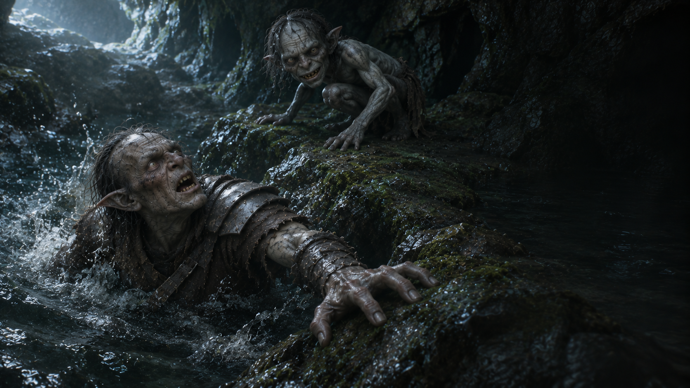

Fin de l’aventure · Échec
Un pas de trop
Une pierre glissante. Une armure trop lourde.
Découvrir votre sortLa pierre glisse
Vous bondissez vers Gollum. Il vous échappe d’un mouvement vif et file entre vos jambes. Votre botte glisse sur la mousse. Vous cherchez un appui, mais votre armure vous entraîne dans la mare.
Sous la surface, le sol disparaît brusquement. Vous tentez de remonter, alourdi par le métal. Au-dessus de vous, Gollum se penche une dernière fois avant de s’évanouir dans la grotte.
Vous aviez demandé une armure plus légère. La demande est probablement encore sur le bureau du capitaine.